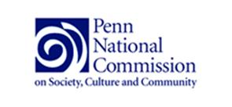
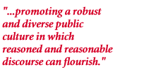
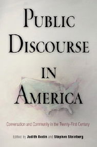

|  |  |
 Leading public figures consider the state of public discourse and public behavior--as well as the causes and effects of social fragmentation, cultural conflict, and uncivil discourse--in the United States. These essays speak to urgent and perennial questions about the nature of American society, the responsibilities of leaders, the rules of democracy, and the role of public culture in times of crisis, conflict, and rapid change. Public Discourse in America originated in the work of the Penn National Commission on Society, Culture, and Community. From its inception in December 1996 to its concluding meeting in November 1999, the Penn National Commission on Society, Culture and Community sought to understand the problems of contemporary public discussion and behavior and to foster more engaged and thoughtful conversations about contemporary social issues.
During the Commission's inaugural session, its chair and convenor, University of Pennsylvania President Dr. Judith Rodin, challenged 48 scholars, political leaders and shapers of public opinion "to address the polarization, oversimplification, and isolation from important cultural and intellectual traditions that are increasingly characteristic of contemporary social and political discourse."
When the 'study' phase of the Commission's work completed, the Commission operated in its 'programmatic' phase as the Penn Public Talk Project. Dr. Stephen Steinberg, the Commission's executive director, and his staff spearheaded a national effort to improve the practice of robust public discourse, or public talk, in ways that led to stronger, more inclusive communities.
The University of Pennsylvania's educational philosophy, dating to the principles of its founder, Benjamin Franklin, links the theoretical and the practical and makes the Penn National Commission and the Penn Public Talk Project natural extensions of the University's core identity. The work of the Commission and the Public Talk Project expresses Penn's fundamental commitment to academic excellence, technological innovation in research and communications, and the importance of bringing academic and professional resources to bear on urgent social problems.
Between December 1996 and November 1999, Commission members deliberated over the course of six thematically linked, semi-annual plenary meetings that took place in Philadelphia, Chicago, Washington, D.C., and Los Angeles.
Early in its discussions, the Commission identified three deficiences that influence public behavior: a Failure of Leadership, in the continuing dialogue between and among leaders and constituencies; the Fragmentation of Communities, in which race, class, ideology, ethnicity, and special interests divide and sub-divide rather than unify civic life; and a Culture of Intolerance, expressed in the incivility, intolerance, and ideological polarization that dominate our public discourse. Commission members examined these problems through three working groups: Culture and Public Behavior, Leadership in a Democratic Society, and 21st Century Community.
Commission members' contributions at the plenary sessions and through the working groups allowed the Penn National Commission to commission research, papers and presentations that examined the current state of discourse and its relationship to contemporary society and culture. These materials:
Document the Condition of Contemporary Public Discourse
What is the present state of public discourse? In what specific respects does it fail to approach the standard of "reasoned and reasonable" discourse described by the commission?Define Exemplary Public Discourse
What is "reasoned and reasonable" discourse? What are its component elements? How has it changed, if at all, over time? How and why does it work when it works well?Identify the Principles and Conditions of Successful Discourse Leadership
What are the characteristics of effective discourse leadership on the part of individuals? What institutional practices promote communities that foster strong and productive public discourse? Is a strong community associated with good discourse practices? Can exemplary discourse practices be used to reintegrate isolated subcommunities into a larger society or bridge barriers of hostility between communities?What is Good Public Discourse? An Annotated Bibliography Prepared by David M. Ryfe (doc)
Key Findings of the Penn National Commission
Implications for Improving Public Discourse
Fundamentals of Public Discourse
Central Issues in Public Discourse
Public Discourse in Specific Contexts
Members of the Commission represented many different disciplines, professions, political perspectives, and opinions.
Dr. Stephen P. Steinberg, Executive Director
Penn National Commission on Society, Culture and Community
Office of the President
100 College Hall
University of Pennsylvania
Philadelphia, PA 19104-6380
Phone (215) 573-6666
Fax (215) 573-6667
E-mail: pnc@pobox.upenn.edu
©2003 Trustees of the University of Pennsylvania. The materials available on this website are not to be duplicated or redistributed without the express written permission of the Penn National Commission on Society, Culture and Community.